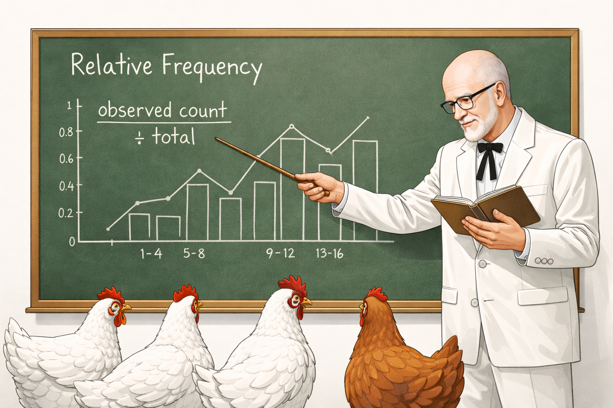

Well now, let me tell you something. When you have got yourself a nice pile of past observations, you can use them to figure out how likely something is to happen again. Around here, we call that a relative frequency, and it is as useful as a rooster at sunrise.
Here is how it works: you take the count of what you are looking for, divide it by everything you counted, and that gives you a number you can hang your hat on. You can write it as a decimal or dress it up as a percentage, whichever suits your fancy.
\[\text{Relative Frequency} = \frac{\text{Observations in range}}{\text{Total observations}}\]
Round your percentage to one decimal place (XX.X%).
Decimal → Percentage
\[0.36 \times 100 = 36.0\%\]
Percentage → Decimal
\[36.0\% \div 100 = 0.36\]